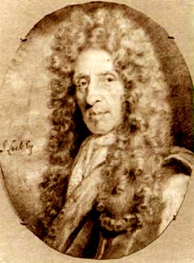

|  |
The John Locke Chronology is a calendar of datable events in the life, and material in the papers, of John Locke.
The first content being added to the John Locke Chronology consists of information about Locke’s whereabouts. Using his Journals and Correspondence, it is possible to determine where Locke was on any given day for a great part of his life. Detailed evidence begins in November 1675, when Locke began his Journal as he embarked on a trip to France. From that point until the end of his life, Locke kept a Journal. Although the amount of detail recorded diminishes, particularly after his return to England from Holland in 1689, it is still possible to track most of his movements. Locke’s correspondence fills in some of the gaps, and also provides some evidence of his movements before 1675.
The John Locke Chronology thus begins in November 1675. Information from the Journals will be added to the site, followed by the additional evidence from the correspondence. At some point in the future, other material will be added to the site: lists of captioned notes in the Journals, lists of letters sent and received, dated entries in Locke’s account books, and other miscellaneous datable material.
Note: The portrait of Locke above is a drawing made by Locke’s manservant Sylvester Brounower c. 1685. The drawing was owned by Francis Cudworth Masham, son of Damaris Masham and one of Locke’s heirs; it is now in the National Portrait Gallery.
| Next Page | Name Index | Title Index |
John Locke Chronology | ||
John Locke Bibliography |
John Locke Manuscripts |
John Locke Resources |
Site created: March 31, 2006